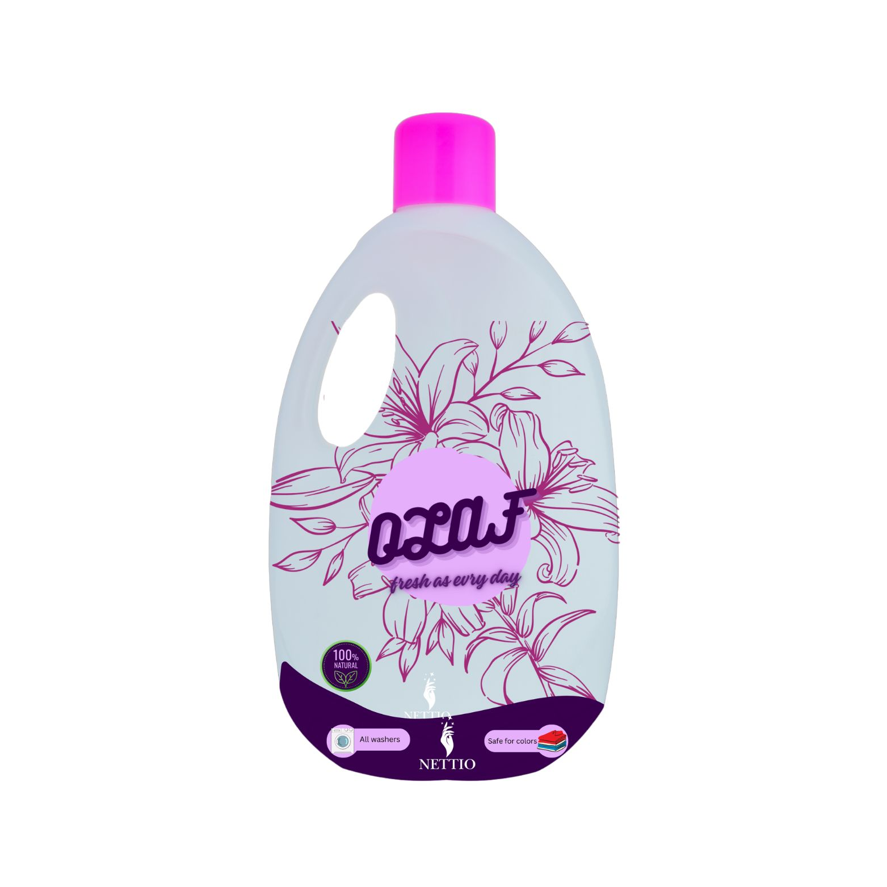
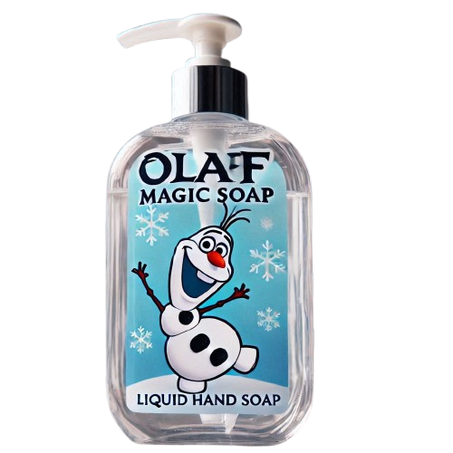

olaf
Laundry Soap "Olaf": laundry detergent is perfect for all types of fabrics, offering your clothes exceptional cleanliness and a long-lasting fresh scent. Its effective formula gently removes tough stains without damaging the fabric, keeping your garments soft and bright with every wash.

olaf
Hand Soap "Olaf": liquid hand soap features a moisturizing and sanitizing formula that cleanses your hands thoroughly, leaving them soft and lightly scented with a floral fragrance. Environmentally friendly and packaged in a practical dispenser, it makes hand washing a refreshing and pleasant experience.